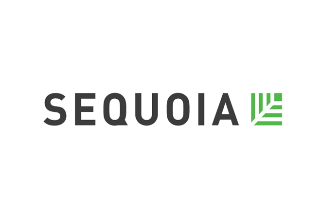
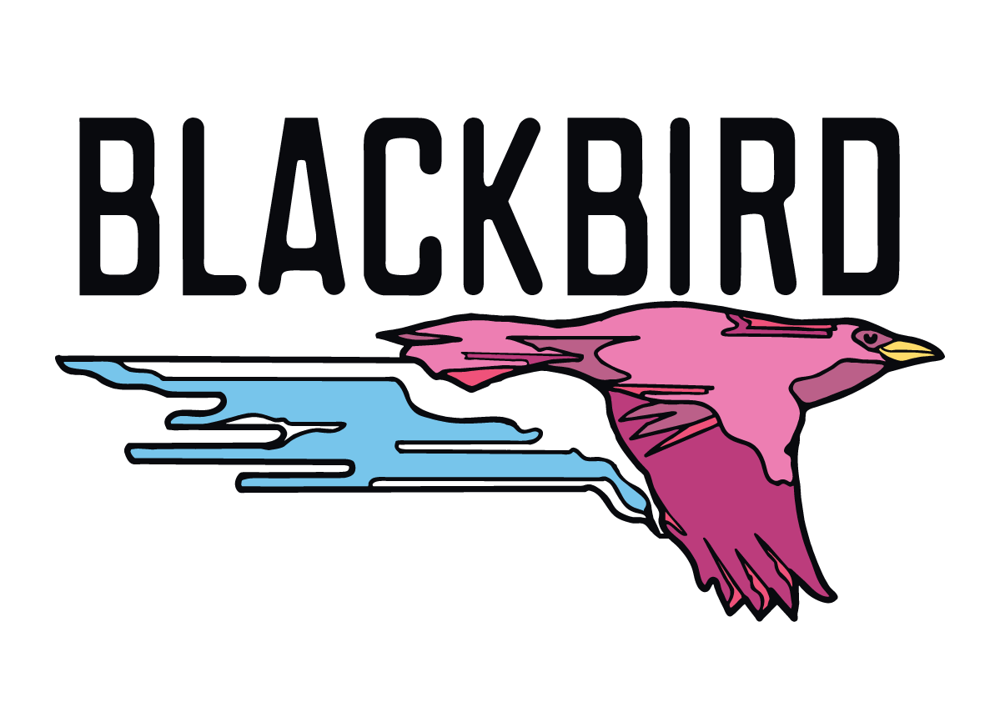
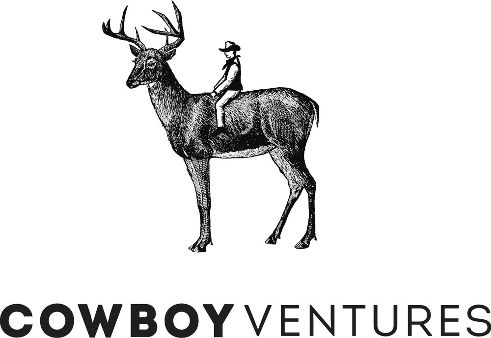
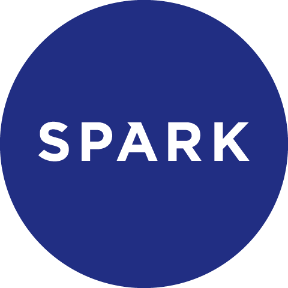

Building diverse, fair, harassment-free culture in the venture capital tech ecosystem.
VC firms committed to #MovingForward
170+ firms across 23 countries working to increase transparency and accountability in venture capital






From Our Community
A collection of blog posts, articles, and writings from members and partners of #MovingForward